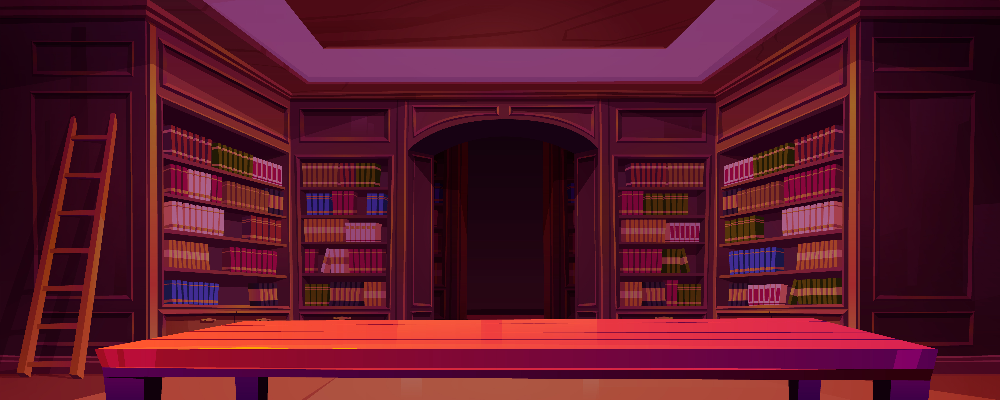
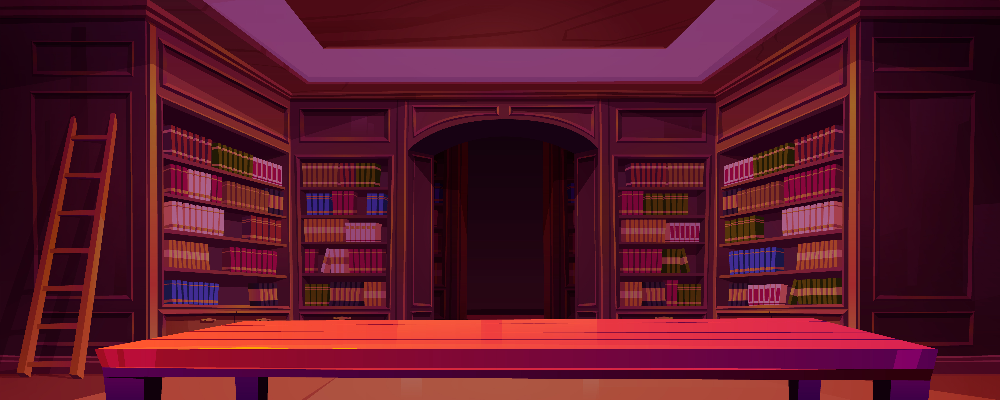
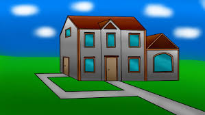
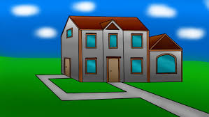

Um dia, estava andando em uma rua antiga, com pequenas casas e jardins floridos, quando avistei uma biblioteca de aspecto vintage muito bonita. Ao olhar a placa do estabelecimento, vi que estava aberto e resolvi entrar!
Você comeca sua jornada na Porta esquerda, subindo uma escada para
Na porta direita, você avista uma estante cheia de livros, e dentro de um deles encontra uma carta. Nela, uma das pistas indica que para localizar a entrada de uma biblioteca secreta você deve procurar a próxima pista em um dos pontos temáticos do estabelecimento. Por qual você comeca
No topo da prateleira dos livros de ação, você encontra uma antiga inscrição apontando que a próxima pista está localizada no armário do andar de baixo.
 

Você decide que a aventura é grande demais e volta para casa, mas sempre se pergunta o que teria encontrado.
Nas prateleiras dos livros do gênero drama, você descobre um mapa antigo escondido atrás de uma estátua, apontando que a próxima pista está em baú
Explorando alguns dos livros, você encontra algo, mas isso te leva a um beco sem saída.
No armário do andar de baixo, a busca pela biblioteca se intensifica. Você se depara com uma escolha importante.
Você finalmente encontra um mapa antigo. Agora, para o andar de baixo!
Você encontra uma passagem escondida com inscrições antigas que revelam a entrada da biblioteca secreta.
Essa escolha te leva de volta a entrada, não há mais sinais aqui.


Dentro da biblioteca secreta, você descobre tesouros, livros e histórias inimagináveis.
Retornando, você finalmente encontra a pista certa que levam à biblioteca secreta.